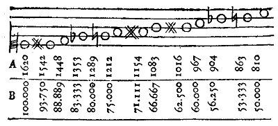

Diapason des Facteurs d'Orgue.
Le Diapason dont les facteurs se servent pour trouver les longueur & largeur des tuyaux d'orgue, est une figure triangulaire, pl. XI, fig. 29 [Pl. VII de l'édition originale], Art du Luthier, tome 3 des gravures, dont le côte O, VIII, est égal à la longueur du plus grand tuyau du jeu dont on veut trouver les proportions & qui, dans la figure, est le bourdon de 8 pieds bouché sonnant le 16.
La ligne VIII, III, est le périmètre du tuyau, ou la circonférence, lorsque les tuyaux sont cylindriques.
La longueur & la largeur du plus grand tuyau d'un jeu étant données, il faut trouver la longueur & la largeur de tous les autres qui doivent être semblables ; pour cela sur les lignes O, VIII & VIII, III, qui font ensemble un angle III, VIII, O, rectangle en VIII, on trace un diapason en cette manière. On divise la ligne O, VIII, en deux parties égales, & on élève la perpendiculaire ut, dont la longueur est déterminée au point ut, par la rencontre de la ligne III, O, qui est l'hypothenuse du triangle O, VIII, III, auquel est semblable le triangle O, ut, ut, dont les côtés O, ut, & ut, ut, homologues à ceux du grand triangle qui comprennent l'angle droit, sont le côté O, ut, la longueur & le côté ut, ut, la largeur du tuyau ut, qui sonnera l'octave au dessus du premier tuyau, dont la longueur O, VIII, & la largeur VIII, III, avoient été données, & qui doit toujours être un ut.
Pour trouver les autres intervalles intermédiaires, il y a différens moyens que nous allons faire connoître succintement.
Premièrement, il faut connoître les rapports des sons que l'on veut faire rendre aux tuyau.
Ces sons de notre système diatonique, sont dans les rapports des nombres de la table suivante.
SYSTÊME DIATONIQUE. Intervalles diatoniques. Rapport des
sons.Noms des
sons.VIII. Octave. 1 à 1 UT VII. Septième maj. 8 à 15 SI 7. Septième mineure. 5 à 9 sib VI. Sixte majeure, 3 à 5 LA 6. Sixte mineure, 5 à 8 sol V. Quinte, 2 à 3 SOL 4. Triton, 32 à 45 fa# IV. Quarte, 3 à 4 FA III. Tierce majeure, 4 à 5 MI 3. Tierce mineure, 5 à 6 mib II. Seconde majeure, 8 à 9 RE 2. Seconde mineure, 15 à 16 ut# Unisson ou son fondamental. 1 à 1 ut
Connoissant ces rapports, il est facile de trouver sur la ligne O, VIII, les points ut, RE, MI, &c. ; car il suffit de regarder les termes des rapports ci-dessus, comme les termes d'une fraction qui exprimera combien de parties de la ligne O, VIII, il faut prendre.
L'antécédent des rapports doit être pris pour numérateur, & le conséquent des mêmes rapports doit être pris pour dénominateur.
Le dénominateur marquera en combien de parties la ligne totale O, VIII, doit être divisée, & le numérateur combien on doit prendre de ces parties, en commençant à les compter par l'extrémité O ; ainsi le rapport des sons qui forment l'octave étant 1 à 2, il faut transformer ce rapport en la fraction 1/2, laquelle fraction marque qu'il faut prendre la moitié O, ut, de la ligne O, VIII, pour avoir l'octave ut, ut.
Le rapport du son fondamental ou de l'ut donné à sa quinte, est 2 à 3, qu'il faut transformer de même en la fraction 2/3, qui marque qu'il faut prendre les 2/3 de la ligne totale O, VIII, pour avoir la quintte [sic] Sol, sol ; ainsi des autres.
Les parties de la ligne O, VIII, interceptées entre le point O, & les points UT, RE, MI, FA, &c. sont les longueurs, & les lignes Ut ut, Sol sol, RE re, & terminées par la rencontre de la ligne O ut, sol re, III, sont les largeurs des tuyaux semblables qui rendront les sons ut, RE, MI, FA, SOL, LA, SI, UT, & les demi-tons intermédiaires dans les rapports convenables. Ce qu'il falloit trouver.
On trouve de même facilement la partition de l'octave IV, II, en considérant la ligne O, IV, comme la ligne totale qu'il faut diviser ; en en prenant la moitié pour l'octave, on aura le point II ; & en prenant des parties de la ligne O, IV, comme on a pris des parties de la ligne O, VIII, on aura, dans l'étendue de IV, II, des divisions qui termineront les longueurs des tuyaux, qui rendront les sons, dont on aura employé les rapports.
Si on veut encore ajouter une octave, on regardera la ligne O, II, comme la ligne totale qu'il faut diviser, & de laquelle on prendra la moitié O, I, pour avoir l'octave de O, II, & on trouvera les divisions de l'espace I, II, comme on a trouvé celles de l'espace VIII, IV.
Pour une quatrième, octave, on prendra l'intervalle I 1/2, en divisant la ligne totale O, I, en deux parties égales au point 1/2, & on répartira cette espace I 1/2, comme on a réparti l'espace VIII, IV.
Pour une cinquième octave, on prendra la moitié de la ligne O 1/2, en la divisant en deux au point 1/4, & divisant l'espace, 1/2, 1/4, comme l'on a divisé les autres.
Pour une sixième, il faut prendre la moitié de la ligne O 1/4, & en général prendre toujours pour ligne toute la partie de la ligne O, VIII, qui restera du côté de O, & opérer sur cette partie comme on a opéré sur la ligne totale O, VIII.
Si on veut trouver les octaves en descendant, comme, par exemple, l'octave comprise entre le seizième pied & le huitième pied, il faut regarder la ligne O, VIII, comme étant la moitié de la ligne O, XVI, & partant il faut ajouter à la ligne O, VIII, du côté VIII, une ligne qui lui soit égale ; ensorte que la ligne totale ait 16 pieds & faire la partition de cette ligne O, XVI, dont il n'y a que la moitié dans la planche, comme on a fait celle de la ligne O, VIII.
S'il a ravalement à l'orgue, on doublera la ligne O, XVI, pour avoir l'octave de 32 pieds, qui sera compris entre le XVI pied, & l'extrémité XXXII, de la ligne O, XXXII, que l'on répartira, comme on a réparti la ligne O, VIII, & les autres.
Les tuyaux construits sur ces mesures, seront semblables, à cause de la similitude des triangles, & en raison triplée inverse des termes des rapports ; ils rendront des sons qui seront dans les mêmes rapports que les nombres qu'on aura employés ; ainsi, si on a employé les nombres qui expriment les rapports des intervalles diatoniques, les tuyaux rendront des sons qui seront éloignés du son le plus grave, qui est le son fondamental des mêmes intervalles.
Autrement, prenez les nombres suivans A, qui contiennent le système tempéré, ou les nombres B, qui font la partition de l'octave en douze demi-sons égaux.
 Si on fait usage des nombres A, il faut diviser la ligne totale O, VIII, ou O, IV, ou O II, si c'est une première, seconde, troisième octave, en 1620 parties, & marquer les points ut, SI bémol, si, LA dièse, sol, SOL, &c. vis-à-vis les parties de la ligne O, VII, exprimées par les nombres A de la table ; ainsi, le nombre 810 qui est la moitié de 1620, se trouvera au milieu de la ligne totale, dont il suffit de diviser la seconde partie de 810 jusqu'à 1620, puisque la première partie de 1 jusqu'à 810 est ajoutée à toutes les largeurs. Après avoir marqué les points sur la ligne qui répond au nombre A de la table, on menera les verticales IV, ut SOL sol, RE ré, &c. qui seront rencontrées & terminées par l'hypothenuse O, ut, sol, ré III ; ces lignes verticales sont les largeurs des tuyaux, dont les lignes O, IV, O, SOL, O, RE, O, VIII &c. sont les longueurs.
Si on veut diviser l'octave en douze demi-tons égaux, on se sevira [sic] des nombres B de la table, comme on s'est servi des nombres A ; ensorte que le plus grand 1000.000 réponde à l'extrémité VIII de la ligne O, VIII, & le plus petit 50.000, au milieu de cette même ligne.
Les facteurs ont une pratique peu exacte à la vérité, mais cependant qu'on peut suivre sans inconvénient, puisque lorsque l'on taille les tuyaux, on laisse toujours quelques pouces de longueur de plus qu'il ne faut, qu'on réserve à ôter, lorsque les tuyaux sont placés, & qu'on les accorde ; ils divisent, de même que dans les méthodes précédentes, la ligne totale O, VIII, en deux parties égales, pour avoir l'étendue VIII, IV, qui répond à une octave ; ils partagent ensuite cette partie VIII, IV, en trois parties égales, dont une SOL, IV, ajoutée à l'autre moitié O, IV, de la ligne totale, donne la quinte SOL, qui est le seul intervalle juste de cette partition ; ensuite ils divisent le tiers SOL, IV, en cinq parties égales, pour avoir les quatre divisions sol dièse, LA, si bémol, SI ; & les deux autres tiers VIII, SOL, en sept parties égales, ce qui donne les points ut dièse, RE mi, bémol MI, FA fa dièse. Par où ils achèvent leur partition, qui n'est rien moins qu'exacte ; mais qu'on peut cependant pratiquer, en observant de donner toujours aux tuyaux plus de longueur qu'il ne leur en faut.
Quoique nous tolérions la pratique des facteurs, il faut cependant observer qu'il est beaucoup mieux de ne s'en point servir ; car, quoique les tuyaux soient amenés à leur longueur en les coupant, lorsqu'on les accorde, il n'est pas moins vrai qu'ils ne sont plus des corps semblables, puisqu'on ne peut réformer le diapason vicieux des grosseurs : il est pourtant requis que les tuyaux aient leurs grosseurs, suivant le diapason, c'est-à-dire, qu'ils soient semblables, pour qu'ils rendent la plus parfaite harmonie qu'il est possible. (Cet article est de MM. Thomas & Goussier.)